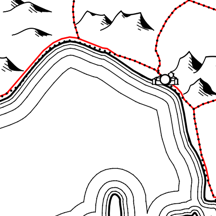

This plugin enables cartographic line displacement (e.g. where, at small scales, a road comes too close to a motorway, a coastline, etc.). It ensures that the line to be displaced cannot come closer to the fixed line than the edge of a buffer around the fixed line. Where it would actually come closer, it will instead run along the buffer edge.
The displaced geometry is generally written. Dynamic line displacement is possible to a limited extent.
The layer selection is self-explanatory.
If your source geometry is dynamically simplified or smoothed via a geometry generator, you can try to reproduce this here so that the newly generated, displaced geometry matches. More precise results may later be achieved in the geometry generator of the displaced geometry itself (see below at Leave symbol layer …).
If you leave the values for Smoothing at zero, QGIS uses default values.
Displacement distance is the radius of the buffer drawn around the fixed geometry.
Minimum length of displaced segments allows the displaced geometry to intrude into the buffer with very short segments, which sometimes produces better results.
By default the displaced geometry is written to a temporary layer, whose CRS you can set here.
If instead you write to an existing layer, its current geometry will be overwritten unless you choose append new geometry.
If the line network of the geometry to be displaced is highly fragmented, it should first be connected into continuous lines, otherwise gaps will occur where small fragments lie entirely within the buffer.
A reconnection after displacement can improve the result.
With these settings you are controlling the script Connect network fragments straight (iterative), which you can also find separately in the Processing toolbox if you have chosen Leave symbol layer … below.
The debug levels stem from the development of the plugin and can help in troubleshooting.
Leave symbol layer … could be one of the most important options of this plugin. The plugin is merely a graphical user interface for the function line_displacement, which is called via an expression in the geometry generator. The plugin builds this expression and starts the geometry generator. Keeping the symbol layer created for this purpose has several advantages:
The function line_displacement becomes active only if the symbol layer is visible and the entire layer is visible and editable (Exception: pre_final only requires visibility to allow dynamic line displacement). For manual execution the following sequence is recommended:
If you choose Leave symbol layer …, the function line_displacement (Linienverdraengung.py) remains available in the function editor of the geometry generator, and the script Connect network fragments straight (iterative) (Netzfragmente_verknuepfen.py) remains under Network cleaning in the Processing toolbox.
Finally you can write a log file on the desktop, for example for troubleshooting.
Developed by Robert Pfeffer, Hesse
(with kind support from ChatGPT)
License: GPL 3.0